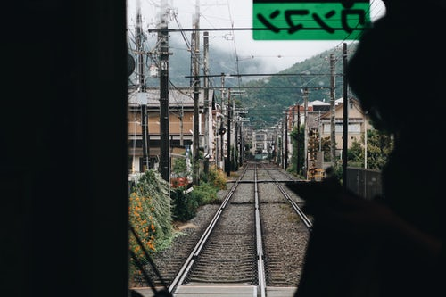

예나'S 방랑기
일본여행기 - 교토,오사카
국내여행기 - 전주,부산
일본여행기 - 교토,오사카
교토
오사카와 거리가 멀지 않은 곳에 위치해 있으며, 오사카와는 다른 느낌으로 전형적인 일본 소도시의 느낌을 즐길 수 있는 곳이다. 
▲ 교토전철 안에서 바라본 풍경
▲ 교토의 골목길
오사카
한국에서 가깝게 갈수있는 일본의 대표적인 여행지중 한곳이다. 교통편이 편리하며,교토와 인근의 도시 및 관광지와도 가까운 거리다.
▲오사카 도톤보리 시내풍경
▲오사카성의 풍경